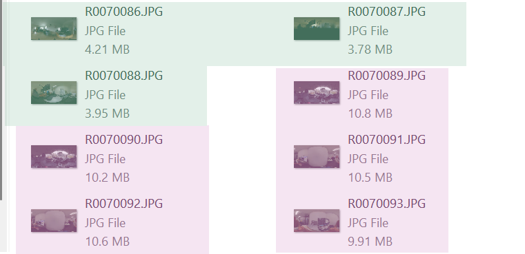
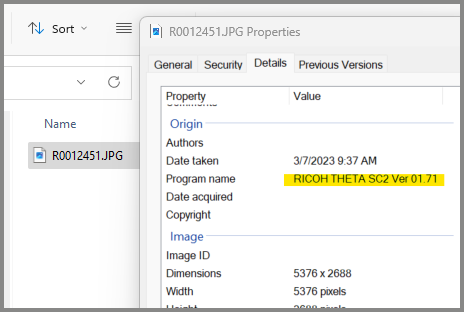

Verifying Images
The RICOH THETA X can take 11K and 5.5 images.
| model | resolution | width and height | approx megapixels | approx file size |
|---|---|---|---|---|
| THETA X | 11K | 11008 × 5504 | 60 megapixels | 9MB - 12MB |
| THETA X | 5.5K | 5504 × 2752 | 15 megapixels | 3.5 - 4.5MB |
| SC2 | 5.4K | 5376×2688 | 14 megapixels | 3 - 4.4MB |
File Size
You can use the file size to quickly see the expected resolution.

Windows Properties
On Windows, you can right-click on the image file to see properties.

metadata
Access image metadata to get detailed information in the image.
This example shows the use of ExifTool
on Windows 11. With the command
exiftool.exe [name_of_file.JPG], the camera model
(RICOH THETA X), firmware version of the camera (1.41.0) and image size (11008x5504)
can quickly be reviewed.
PS C:> exiftool.exe .\R0070093.JPG
ExifTool Version Number : 12.41
File Name : R0070093.JPG
File Size : 9.9 MiB
File Type : JPEG
File Type Extension : jpg
MIME Type : image/jpeg
Exif Byte Order : Big-endian (Motorola, MM)
Make : RICOH
Camera Model Name : RICOH THETA X
Orientation : Horizontal (normal)
Software : RICOH THETA X Ver 1.41.0
XMP Toolkit : RICOH THETA X Ver 1.41.0
Projection Type : equirectangular
Use Panorama Viewer : True
Cropped Area Image Width Pixels : 11008
Cropped Area Image Height Pixels: 5504
Full Pano Width Pixels : 11008
Full Pano Height Pixels : 5504
Image Width : 11008
Image Height : 5504
Encoding Process : Baseline DCT, Huffman coding
Bits Per Sample : 8
Color Components : 3
Y Cb Cr Sub Sampling : YCbCr4:2:0 (2 2)
Aperture : 2.4
Image Size : 11008x5504
Megapixels : 60.6
Shutter Speed : 1/20
verify HDR
To verify that that image is in HDR, use the -v option for
exiftool and inspect the MakerNotes Ricoh_ThetaSubdir_0x0002.
A value of 1 indicates HDR. A value of 0 indicates non-HDR.
Example with HDR
Ricoh_ThetaSubdir_0x0002 is 1.
PS C:> exiftool.exe -v .\R0070093.JPG
| | 18) MakerNoteRicoh (SubDirectory) -->
| | + [MakerNotes directory with 8 entries]
| | | 0) MakerNoteType = Rdc
| | | 1) FirmwareVersion = 0x00
| | | 2) Ricoh_0x0003 = 8580
| | | 3) SerialNumber = 14010001
| | | 4) RecordingFormat = 255
| | | 5) WhiteBalance = 0
| | | 6) ColorTempKelvin = 0
| | | 7) ThetaSubdir (SubDirectory) -->
| | | + [MakerNotes directory with 48 entries]
| | | | 0) Ricoh_ThetaSubdir_0x0001 = 1
| | | | 1) Ricoh_ThetaSubdir_0x0002 = 1
Example with non-HDR
PS C:> exiftool -v .\R0070094.JPG
| | 18) MakerNoteRicoh (SubDirectory) -->
| | + [MakerNotes directory with 8 entries]
| | | 0) MakerNoteType = Rdc
| | | 1) FirmwareVersion = 0x00
| | | 2) Ricoh_0x0003 = 8580
| | | 3) SerialNumber = 14010001
| | | 4) RecordingFormat = 255
| | | 5) WhiteBalance = 0
| | | 6) ColorTempKelvin = 0
| | | 7) ThetaSubdir (SubDirectory) -->
| | | + [MakerNotes directory with 48 entries]
| | | | 0) Ricoh_ThetaSubdir_0x0001 = 1
| | | | 1) Ricoh_ThetaSubdir_0x0002 = 0
Camera Body Screen
HDR is off. Swipe up from the bottom of screen to see this menu. Use a partial swipe. A full swipe will show a different menu.

On the camera screen, HDR is set with Option.

When HDR is enabled, the letters HDR will appear on the screen.